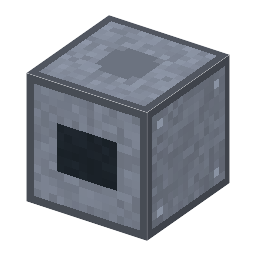

説明
①子ども 真空の中で金属を熱して蒸気にし、ガラスに薄くくっつける機械。
②学生 電気 300W（タングステン線のヒーター）。真空容器のとなりに置き、容器が 0.01Pa 以下（拡散ポンプ [5-05] が要る）のときだけ動く（20秒）。クラウンガラス＋銀の粒 → 半透明鏡、レンズ＋蛍石 → 反射防止膜付きレンズ [7-22]。1回ごとに容器を開けるので、圧力が少し上がる。作り方：W線×2＋鉄×2＋銅ケーブル＋ソーダ石灰ガラス。
③大人 1912年、ポールとプリングスハイムは真空の中で金属を蒸発させて鏡の膜を作った（それより前にも試みはあった）。1930年代、ジョン・ストロングは望遠鏡の鏡にアルミニウムを蒸着し、曇りにくい鏡にした。1960年代の IC のアルミ配線もこの方法。
④ガチ 空気が残っていると、蒸発した金属原子が気体分子にぶつかって散らばる。気体分子が次にぶつかるまでに飛ぶ距離（平均自由行程）は、およそ 6.6mm÷圧力（Pa）。0.01Pa なら約 66cm で、ベルジャーより長いので、原子はまっすぐ飛んで基板に付く。
作り方
使い道
（このアイテムを使うレシピは無い）